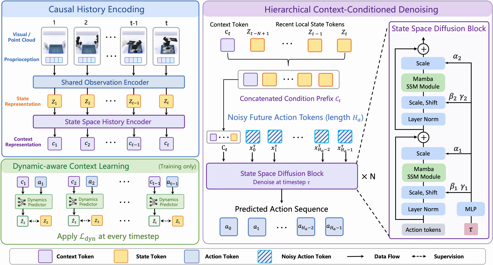

Encode the full history
A causal Mamba encoder recurrently compresses incoming visual and proprioceptive observations into a compact context token.
Remember the past. Act on what matters.
1Global College, Shanghai Jiao Tong University
2School of Mechanical Engineering, Shanghai Jiao Tong University
*Corresponding author: Yutong Ban
ABSTRACT
Diffusion-based imitation learning has shown strong promise for robot manipulation. However, most existing policies condition only on the current observation or a short window of recent observations, limiting their ability to resolve history-dependent ambiguities in long-horizon tasks. To address this, we introduce DSSP, a history-conditioned Diffusion State Space Policy that enables efficient, full-history conditioning for robot manipulation. Leveraging the continuous sequence modeling properties of State Space Models (SSMs), our history encoder effectively compresses the entire observation stream into a compact context representation. To ensure this context preserves critical information regarding future state evolution, the encoder is optimized with a dynamics-aware auxiliary training objective. This high-level context representation is then seamlessly fused with recent state observations to form a hierarchical conditioning mechanism for action generation. Furthermore, to maintain architectural consistency and minimize GPU memory overhead, we also instantiate the diffusion backbone itself using an SSM. Extensive experiments across simulation benchmarks and real-world manipulation tasks show that DSSP achieves state-of-the-art performance with a significantly smaller model size, demonstrating superior efficiency of the hierarchical conditioning in capturing crucial information as the history length increases.
METHOD
A state-space history encoder and a state-space diffusion policy connect long-term task progress with recent control cues.

A causal Mamba encoder recurrently compresses incoming visual and proprioceptive observations into a compact context token.
A dynamics-aware auxiliary objective trains the context to predict the next state under the executed action, preserving cues useful for future decisions.
A state-space diffusion denoiser combines long-term context with recent observations. Separate timestep modulation keeps task conditioning stable.
EXPERIMENTS
Evaluation spans 87 simulation tasks across RoboTwin 2.0, MetaWorld, and Adroit, alongside three memory-dependent real-world tasks.
Success rate (%) ↑ · Model parameters ↓
| Method | Observation | Short (18) | Mid (15) | Long (17) | Average | Parameters |
|---|---|---|---|---|---|---|
| ACT | RGB | 29.94 | 26.40 | 32.47 | 29.74 | 80.0M |
| DP | RGB | 31.28 | 26.00 | 26.41 | 28.04 | 96.8M |
| π₀ | RGB | 44.56 | 44.07 | 50.47 | 46.42 | 3.3B |
| RDT | RGB | 36.72 | 32.47 | 33.94 | 34.50 | 1.2B |
| SeedPolicy | RGB | 43.39 | 36.53 | 47.59 | 42.76 | 147.3M |
| DP3 | Point cloud | 59.83 | 52.53 | 52.76 | 55.24 | 264.4M |
| FlowPolicy | Point cloud | 54.89 | 37.40 | 29.59 | 41.04 | 264.4M |
| MambaPolicy | Point cloud | 61.67 | 56.27 | 58.88 | 59.10 | 47.9M |
| Diff-Control | Point cloud | 64.00 | 54.67 | 58.82 | 59.44 | 264.4M |
| MTIL | Point cloud | 66.22 | 54.73 | 56.18 | 59.36 | 60.5M |
| CycleManip | Point cloud | 57.78 | 49.27 | 54.47 | 54.10 | 279.2M |
| DSSP (ours) | Point cloud | 64.78 | 57.33 | 64.06 | 62.30 | 44.3M |
100 test episodes per task under the in-distribution demo_clean setting. Observation modalities differ across methods; values follow Table 1 of the manuscript.
Success rate (%) ↑ · 20 trials per method per task
Three tasks on an AgileX platform with fixed-camera point-cloud observations. Mean success is 30% for DP3 and 70% for DSSP, an increase of 40 percentage points. The chart shows the DP3 comparison; the manuscript also reports FlowPolicy and MP1.
Six history-sensitive RoboTwin tasks
| History encoder | Success (%) ↑ | Encoding p95 ↓ | Peak GPU memory ↓ |
|---|---|---|---|
| Transformer | 66.00 | 3.61 ms | 586.2 MB |
| Mamba (DSSP) | 71.33 | 1.97 ms | 238.5 MB |
| Variant | Success rate (%) ↑ |
|---|---|
| DP3 baseline | 58.67 |
| Without history encoder | 64.33 |
| Without timestep-decoupled denoising | 66.67 |
| Without recent-state conditioning | 68.17 |
| Without dynamics-aware objective | 69.50 |
| With Transformer denoiser | 68.50 |
| DSSP · full model | 71.33 |
These studies use a six-task subset and should not be compared directly with the 50-task RoboTwin average. Encoding measurements refer to the history encoder, not end-to-end policy latency.
Results follow the manuscript. See its Tables 1–6 for protocols, additional baselines, and the complete evaluation.
SEE DSSP IN ACTION
Watch the project demonstration.
CITATION
@inproceedings{guan2026dssp,
title={DSSP: Diffusion State Space Policy with Full-History Encoding},
author={Zhiyuan Guan and Jianshu Hu and Han Fang and Yunpeng Jiang and Yize Huang and Shujia Li and Xiao Li and Yutong Ban},
booktitle={Advances in Neural Information Processing Systems},
year={2026},
eprint={2605.14598},
archivePrefix={arXiv},
primaryClass={cs.RO},
doi={10.48550/arXiv.2605.14598},
url={https://arxiv.org/abs/2605.14598}
}